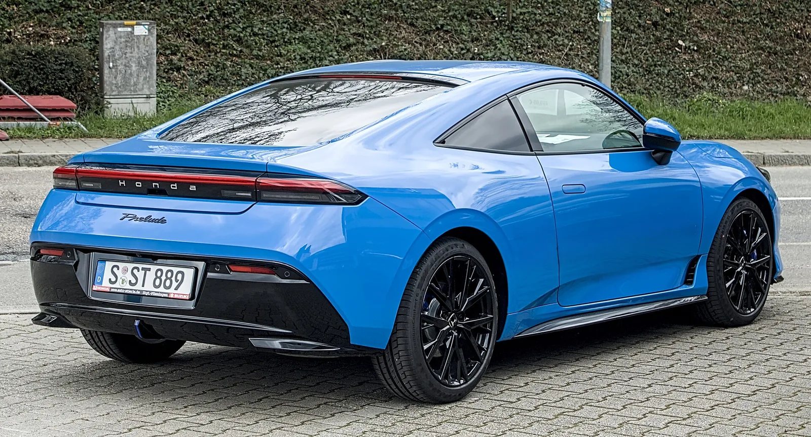
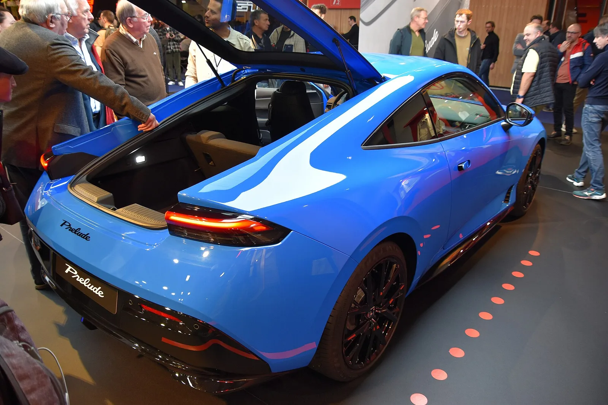

▲ 6세대 프렐류드. 하이브리드 전륜 구동 쿠페다 ⓒ Wikimedia Commons
자동차 커뮤니티가 원한다고 말하는 것과 실제로 사는 것은 다릅니다.
2026년 1~7월 미국에서 혼다 프렐류드가 2,077대 팔렸습니다. 스바루 BRZ는 1,785대였습니다.
프렐류드는 6,140달러 비싸고, 수동도 후륜구동도 없습니다. 그런데 292대를 더 팔았습니다.
1. 숫자부터
| 차량 | 판매 | 가격(탁송 포함) |
|---|---|---|
| 혼다 프렐류드 | 2,077대 | 43,195달러 |
| 스바루 BRZ | 1,785대 | 37,055달러 |
| 차이 | +292대 | +6,140달러 |
둘 다 적게 팔리는 차입니다. 7개월에 2,000대면 월 300대 수준입니다. 이 세그먼트 자체가 그렇습니다.
그래서 292대 차이가 의미를 갖습니다. 전체 규모가 작은 시장에서 16% 이상의 격차이기 때문입니다.
2. 사양표만 보면 BRZ가 이겨야 한다
| 항목 | 프렐류드 | BRZ |
|---|---|---|
| 구동 | 전륜 | 후륜 |
| 파워트레인 | 하이브리드 | 자연흡기 수평대향 |
| 변속기 | 자동 | 수동 선택 가능 |
| 가격 | 43,195달러 | 37,055달러 |
| 지향 | 스타일·일상 | 트랙·순수성 |
스포츠카 애호가가 중시하는 항목은 전부 BRZ 쪽입니다. 후륜, 수동, 자연흡기, 게다가 6,140달러 싸기까지 합니다.
그런데 실제 구매는 반대로 나왔습니다.
3. 혼다가 파악한 구매층
혼다의 자체 조사 결과가 흥미롭습니다. 신형 프렐류드에 관심을 보인 사람들은 "성숙한 전문직, 그중 상당수가 여성"이었습니다. "멋있어 보이는 통근용 차"를 원하는 층입니다.
그리고 이건 1980~90년대 프렐류드의 구매층과 같습니다.
| 구분 | 프렐류드 | BRZ |
|---|---|---|
| 사용 빈도 | 매일 | 주말 중심이 많다 |
| 중요한 것 | 외관, 승차감, 연비 | 핸들링, 조작 감각 |
| 변속기 | 자동이 오히려 유리 | 수동이 핵심 가치 |
| 구매 결정 | "이 차를 타고 다니고 싶다" | "이 차를 몰고 싶다" |
프렐류드는 원래 그런 차였습니다. 1978년 1세대부터 프렐류드는 스포츠카가 아니라 '스페셜티 쿠페'였습니다. 잘 달리는 것보다 멋있게 타고 다니는 것이 목적인 장르입니다.
혼다는 부활시키면서 이 성격을 그대로 가져왔습니다. 후륜과 수동을 넣지 않은 것은 타협이 아니라 원래 정체성의 복원에 가깝습니다.

▲ 프렐류드는 1978년 1세대부터 스포츠카가 아닌 '스페셜티 쿠페'였다
4. "원한다"와 "산다"의 간격
Carscoops는 이 결과를 두고 "애호가가 원한다고 말하는 것과 실제 구매자가 몰고 가는 것 사이의 간격이 놀랄 만큼 넓을 때가 있다"고 정리했습니다.
이 간격은 업계에서 반복적으로 확인돼 온 현상입니다.
| 사례 | 내용 |
|---|---|
| 수동변속기 | "수동을 내달라"는 요구는 많지만 실제 선택률은 낮다 |
| 왜건 | 미국에서 왜건 요구가 꾸준하지만 판매는 SUV로 간다 |
| 소형 픽업 | "작은 트럭을 원한다"는 여론과 실제 대형 픽업 판매의 괴리 |
애스턴마틴이 수동변속기 복귀를 검토하면서도 결정을 못 내리는 이유와도 이어집니다. 개발비는 실제 판매 대수로 회수해야 하는데, 여론과 판매가 일치하지 않습니다.
5. 무스 테스트도 통과했다
프렐류드는 무스 테스트를 통과했습니다. 갑작스러운 회피 상황에서의 안정성을 확인하는 시험입니다.
이 결과가 갖는 의미는 성격과 맞물립니다. 매일 타는 차라면 서킷 랩타임보다 돌발 상황에서의 거동이 더 자주 필요합니다.
같은 시기 마쓰다 CX-5가 같은 시험에서 롤이 크다는 지적을 받은 것과 대비됩니다. 두 차의 성격을 감안하면 흥미로운 대조입니다. 스포티함을 내건 SUV가 흔들리고, 스포티함을 내려놓은 쿠페가 안정적이었습니다.

▲ 프렐류드는 무스 테스트를 통과했다
6. 국내에서는
혼다코리아는 2026년 8월 국내 철수 절차를 밟았습니다. 프렐류드의 국내 정식 판매 가능성은 사실상 없습니다.
다만 이 판매 데이터가 국내 시장에 주는 시사점은 있습니다. 국내에서도 쿠페와 스포츠 세단은 "요구는 많은데 안 팔리는" 장르로 취급돼 왔습니다.
프렐류드의 사례는 그 진단이 정확하지 않을 수 있음을 보여줍니다. 안 팔린 것이 아니라, 실제 구매층이 원하는 형태로 만들지 않았기 때문일 수 있습니다.

▲ 혼다코리아는 2026년 8월 국내 철수 절차를 밟았다
7. 정리
혼다 프렐류드가 2026년 1~7월 미국에서 2,077대 팔려 스바루 BRZ(1,785대)를 292대 앞섰습니다.
프렐류드는 4만3,195달러 하이브리드 전륜, BRZ는 3만7,055달러 자연흡기 후륜에 수동 선택 가능입니다. 사양표상 애호가가 중시하는 항목은 전부 BRZ 쪽입니다.
혼다 조사에서 구매층은 "성숙한 전문직, 상당수가 여성"이었고 "멋있어 보이는 통근용 차"를 원했습니다. 1980~90년대 프렐류드 구매층과 같은 성격입니다. 프렐류드는 무스 테스트도 통과했습니다.